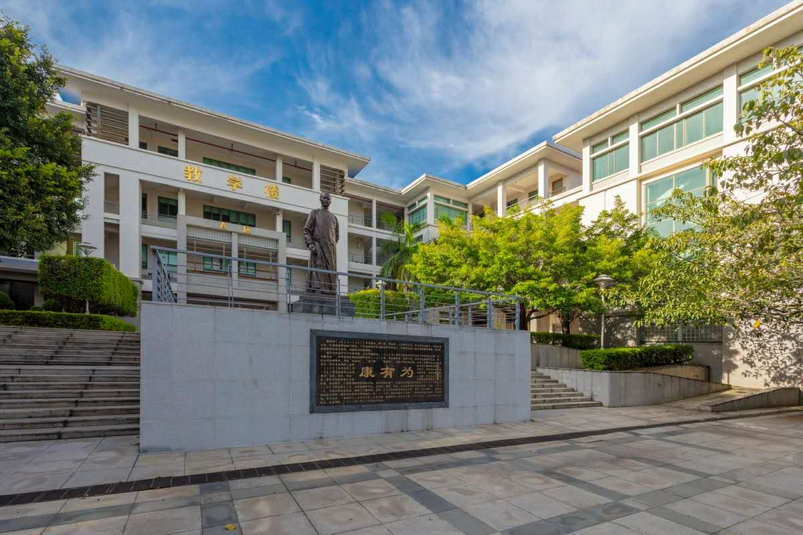
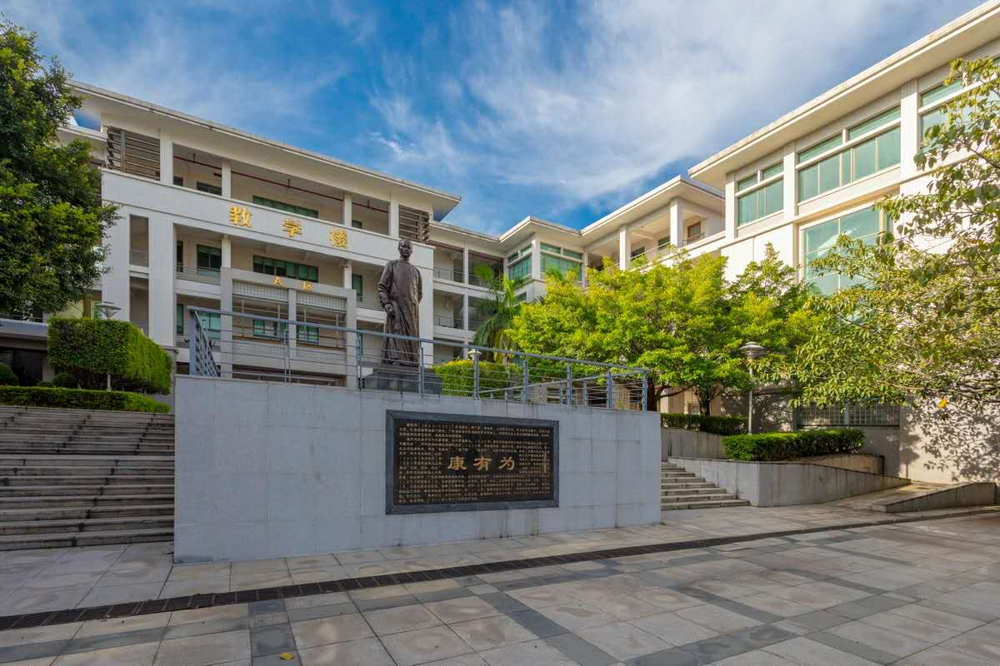
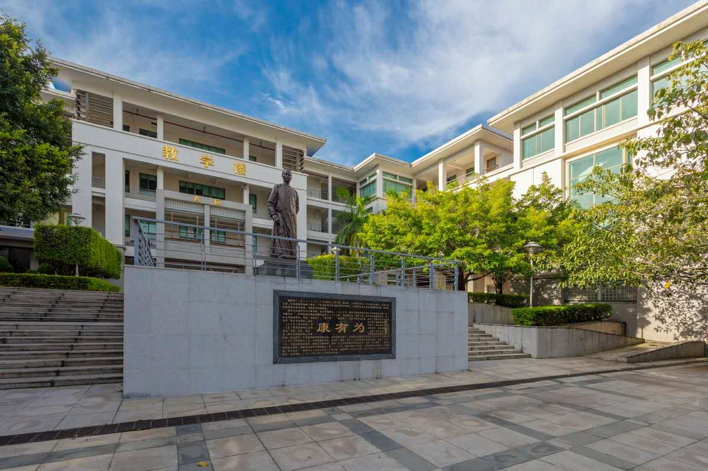
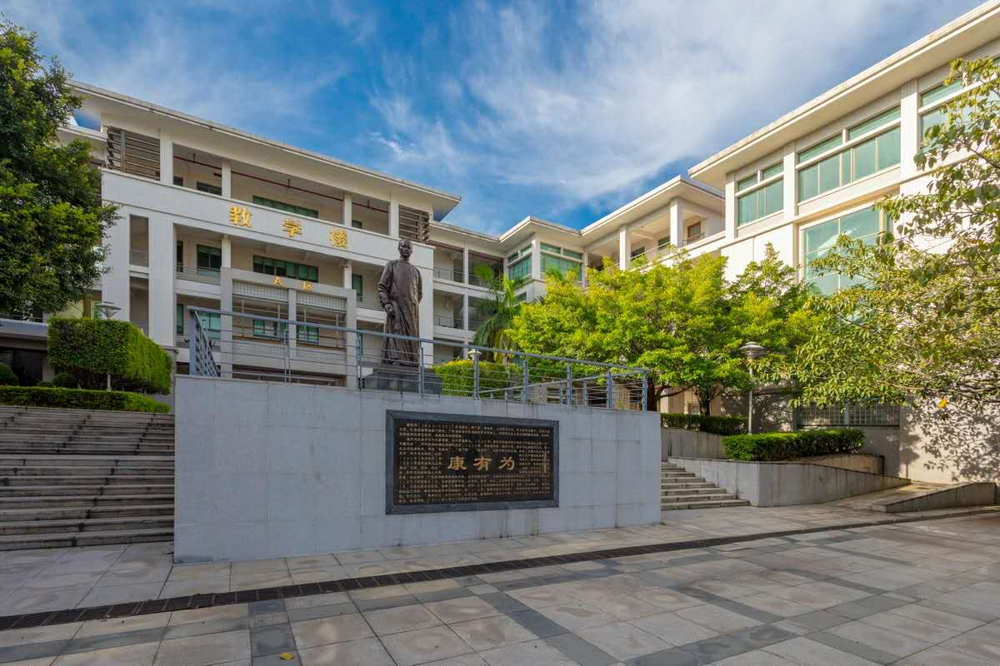

 

华南师范大学南海校区的前身是华南师范大学南海校区（学院），于2000年成立南海学院
2001年开始招生。南海校区占地面积34万多平方米，建筑面积24万平方米，最大可容纳7000多名学生。
年华南师范大学启动“南海校区第二轮综合改革，在保留南海学院和开放学院的基础上，
增设城市文化学院、国际商学院、软件学院、职业教育学院4个二级本科学院，
均为第一批重点本科线招生，南海学院主要负责专科教学（于2014年起停招生）。
成立华南师范大学南海校区管理委员会，执行学校决策部署，协调学校职能部门延伸工作，管理、协调和决定校区属地事务。
南海校区充分利用华南师范大学（国家“211工程”重点建设大学）的办学优势、科研优势和南海区经济发展优势，
走“联合办学、服务社会”的新路，面向广东国民经济主战场，重点设置与发展非师范、应用型学科和专业，
培养广东省尤其是珠三角地区急需的专业人才。2018年11月，
华南师范大学成立国际联合学院，负责统筹南海校区的国际化办学和产学研合作。
关于华南师范大学|关于南海
关于软件学院|关于妖刀黄烦烦